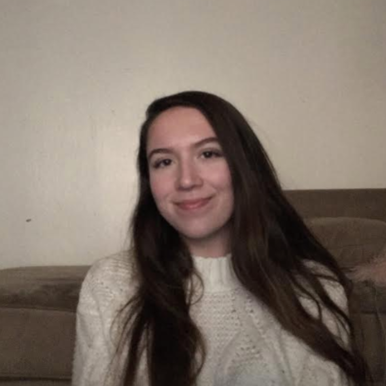
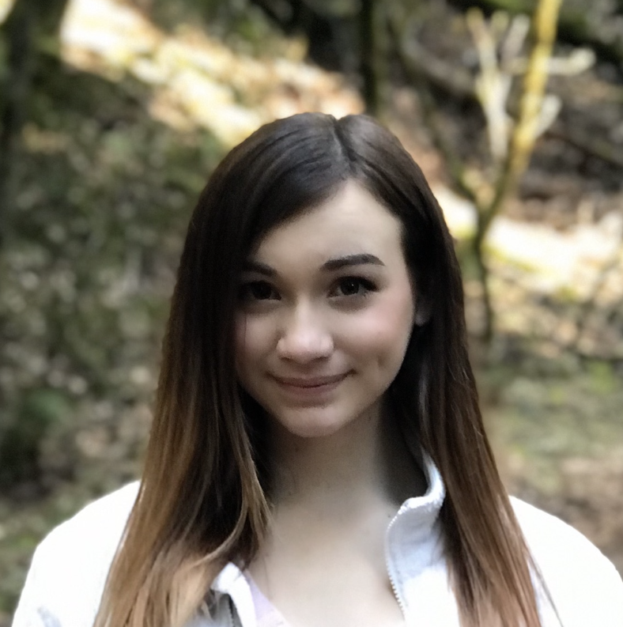

What Do We Do?
- We host a variety of volunteering, mentoring, and fundraising events throughout the year that help bring further our mission of promoting acceptance and empowering the Berkeley autism community. Some of our major events include our annual Autism Acceptance Week as well as our annual 5k Run/3k Walk.
- We also volunteer in the community, hold monthly general meeting, instituted a mentorship program in 2017.
- Interested in volunteering, or just looking for a genuinely supportive, friendly and fun community? Contact Us!
What is Autism Spectrum Disorder (ASD)?
- ASD is a developmental disorder that causes issues with communication, social, verbal, and motor skills.
- No two people with autism are alike -- it impacts each individual in a unique way.
- Although it is treatable, there has yet to be found a cause or cure for autism.
- The rate of autism has steadily grown over the last twenty years, and now affects 1 in 59 children.

If you've met one person with autism, you've met one person with autism.
- Dr. Steven Store

For more information, visit the Autism Society website.
Who are We?
Cole Hasserjian
President
Senior
Why I Joined: I joined Spectrum because I wanted to transform the organization from a group that focused on awareness to a club that is focused on building a sustainable community for neurodivergent students, such as myself.
Goals for Spectrum: I hope that Spectrum continues to build a community for students on the spectrum and makes the transition to Berkeley easier for all neurodivergent individuals.
Eli Oh
Co-Vice President
Junior
Why I Joined: I’ve always wanted to raise awareness and learn more about developmental disabilities. At Spectrum, I am surrounded by dedicated students who are determined to help make Cal a more welcoming community.
Goals for Spectrum: I look forward to working with other organizations on campus, such as the Career Center and the Disability Students Program, to provide both informative events and enjoyable bonding opportunities for neurodiverse students.
Helen Lee
VP of External Affairs
Sophomore
Why I Joined: I joined Spectrum because I wanted to create a bigger community that could open discuss autism and embrace those on the spectrum.
Goals for Spectrum: I want to become a better advocate for those on the spectrum and I hope that Spectrum: Autism at Cal can become a larger platform in which that discussion could happen within our campus community.
Carter Horan
VP of Finance
Sophomore
Why I Joined: My brother, Barclay, was diagnosed with autism at age two. I have seen first hand the challenges that many people on the autism spectrum face and have been passionate about spreading awareness and acceptance in my local community.
Goals for Spectrum: I hope Spectrum continues its pursuit of coming together to make a difference for all people with neurological disabilities. I want to contribute to the club's ever-growing presence on campus so that one day the club may be a well known, safe, and accepting community for all those on the autism spectrum.

Tory Benson
VP of Volunteering
Sophomore
Why I Joined: My mother is a special education teacher, and I have volunteered in her classroom since I was around ten years old. When I got to Cal, I was looking for an opportunity to continue working with children with disabilities/accommodations.
Goals for Spectrum: To have as many people consistently taking advantage of our volunteering opportunities, like ESoccer, as possible, because volunteering has impacted my life so significantly, and to establish a mentorship program for high schoolers on the spectrum because they generally receive less support than they need.
Hari Srinivasan
Education Committee Chair
Junior
Why I Joined: I am a minimally speaking autistic and type to communicate. Being involved with Spectrum at Cal is a natural avenue of my desire to spread understanding of this multi-hued rapidly-increasing developmental disability.
Goals for Spectrum: As the education committee chair and instructor for the faculty-sponsored class on autism, my aim to bring about continued education about the different issues and facets of autism to the students at UC Berkeley and in the community.
Silvia Nolasco
Internal Affairs
Junior
Why I Joined: My younger brother, Benjamin, is on the spectrum and I was only aware of autism and how it affected young children. I wanted to become more informed of how it affects young adults and older folks to not only be a support system for Ben, but for others as well.
Goals for Spectrum: Spectrum aims to create a safe space for folks on the spectrum, as well as form a community with everyone who is passionate about awareness.

Edison Moy
Vice President
Junior
Why I Joined: I joined Spectrum because I wanted to get involved with a grassroots volunteering organization at Cal. Being a part of Spectrum has exposed me to individuals and experiences that have broadened my perspective of what it means to be a student and community member.
Goals for Spectrum: My goals for Spectrum are to create a welcoming and inclusive community for those on the spectrum while also destigmatizing many of the tropes and stereotypes often associated with Autism.
Chloe Gerungan
Marketing
Senior
Why I Joined: To find a community of people that are as passionate about spreading awareness and acceptance about autism as myself. Spectrum has always done their best to keep up with the latest news and make sure we do not stray from our mission.
Goals for Spectrum: To make our presence here at Cal even more noticeable, especially to those who might not know a lot about Autism, and to ensure that everything we do has a greater purpose that extends beyond the club.

Melina Faraone
Intern
Freshman
Why I Joined: I joined Spectrum because I believe people with neurological differences deserve the same resources necessary to be successful and the same opportunity to build a community of peers as neurotypical individuals have.
Goals for Spectrum: I want Spectrum to be a place where neurodiverse individuals can feel comfortable and accepted around both other neurodiverse individuals and neurotypicals, rather than ostracized by their peers.
Nathan Barukh
Intern
Freshman
Why I Joined: I got involved in spreading autism acceptance to understand my brother’s experience on the spectrum. In LA I got to be a camp counselor at a camp for teens with special needs, and create a space at my school where those with special needs could socialize. I joined Spectrum to continue being an active advocate while at Cal.
Goals for Spectrum: I’d love to see Spectrum grow in general members! The club does a great job of creating a welcoming environment and regularly has events which I’d encourage everyone to come to!